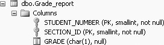

6.1. Query Development
Queries are sometimes developed after some initial experimentation, yet other times they are the result of modifying previously stored queries. The best way to understand how the query building process works is to look at an example. Suppose we want to find the names of all students in the Student_course database who major in computer science (COSC) and have earned a grade of B in some course. To do so, we can follow these steps:
Type the following query to find students who major in computer science:
SELECT *
FROM Student
WHERE major = 'COSC'
This query produces the following 10 rows of output:
STNO SNAME MAJOR CLASS BDATE
------ -------------------- ----- ------ -----------------------
3 Mary COSC 4 1978-07-16 00:00:00
5 Zelda COSC NULL 1978-02-12 00:00:00
8 Brenda COSC 2 1977-08-13 00:00:00
14 Lujack COSC 1 1977-02-12 00:00:00
17 Elainie COSC 1 1976-08-12 00:00:00
31 Jake COSC 4 1978-02-12 00:00:00
121 Hillary COSC 1 1977-07-16 00:00:00
128 Brad COSC 1 1977-09-10 00:00:00
130 Alan COSC 2 1977-07-16 00:00:00
142 Jerry COSC 4 1978-03-12 00:00:00
(10 row(s) affected)
To find the student rows in the preceding output who have earned a B in a course, we first need to add the Grade_report table, shown in Figure 6-1, with a join (to get the grades of those students who are computer science majors).

The join query now looks like (note the choice of columns in the SELECT statement, so that we can see the student names, majors, sections and grades):
SELECT stu.sname, stu.major, g.section_id, g.grade
FROM Student stu, Grade_report g
WHERE stu.major = 'COSC'
AND stu.stno = g.student_number
This query produces 48 rows of output (of which we show the first 20 rows):
sname major section_id grade
-------------------- ----- ---------- -----
Mary COSC 85 A
Mary COSC 87 B
Mary COSC 90 B
Mary COSC 91 B
Mary COSC 92 B
Mary COSC 96 B
Mary COSC 101 NULL
Mary COSC 133 NULL
Mary COSC 134 NULL
Mary COSC 135 NULL
Zelda COSC 90 C
Zelda COSC 94 C
Zelda COSC 95 B
Brenda COSC 85 A
Brenda COSC 92 A
Brenda COSC 94 C
Brenda COSC 95 B
Brenda COSC 96 C
Brenda COSC 102 B
Brenda COSC 133 NULL
.
.
.
(48 row(s) affected)
To add the condition for Bs, we need to add another AND clause in the WHERE condition, by adding a fifth line to the query:
SELECT stu.sname, major, section_id, grade
FROM Student stu, Grade_report g
WHERE stu.major = 'COSC'
AND stu.stno = g.student_number
AND g.grade = 'B'
This query produces the following 14 rows of output:
sname major section_id grade
-------------------- ----- ---------- -----
Mary COSC 87 B
Mary COSC 90 B
Mary COSC 91 B
Mary COSC 92 B
Mary COSC 96 B
Zelda COSC 95 B
Brenda COSC 95 B
Brenda COSC 102 B
Lujack COSC 102 B
Lujack COSC 145 B
Lujack COSC 158 B
Hillary COSC 90 B
Hillary COSC 94 B
Hillary COSC 95 B
(14 row(s) affected)
To get only the student names from the preceding output, we reduce the result set by typing:
SELECT stu.sname
FROM Student stu, Grade_report g
WHERE stu.major = 'COSC'
AND stu.stno = g.student_number
AND g.grade = 'B'
This query produces the following output, a list of all the students who are majoring in COSC and received a grade of B:
sname
--------------------
Mary
Mary
Mary
Mary
Mary
Zelda
Brenda
Brenda
Lujack
Lujack
Lujack
Hillary
Hillary
Hillary
(14 row(s) affected)
The point of this process is that it allows us to test as we go, verify that the query works up to that point, and ensure that we have a reasonable result before we move to the next enhancement. To get the answer in a more reasonable "easy-to-read" orderly manner, a final presentation using DISTINCT (to find the distinct names) and ORDER BY (to order by names) could be added to the query, as follows:
SELECT DISTINCT(stu.sname)
FROM Student stu, Grade_report g
WHERE stu.major = 'COSC'
AND stu.stno = g.student_number
AND g.grade = 'B'
ORDER BY stu.sname
which would give:
sname
--------------------
Brenda
Hillary
Lujack
Mary
Zelda
(5 row(s) affected)
But note that the DISTINCT and ORDER BY do not have to be used together. When the DISTINCT is used, the ORDER BY is not necessary. DISTINCT automatically orders the result set. So writing the previous query without the ORDER BY clause would give you the same output. Try it.
 |